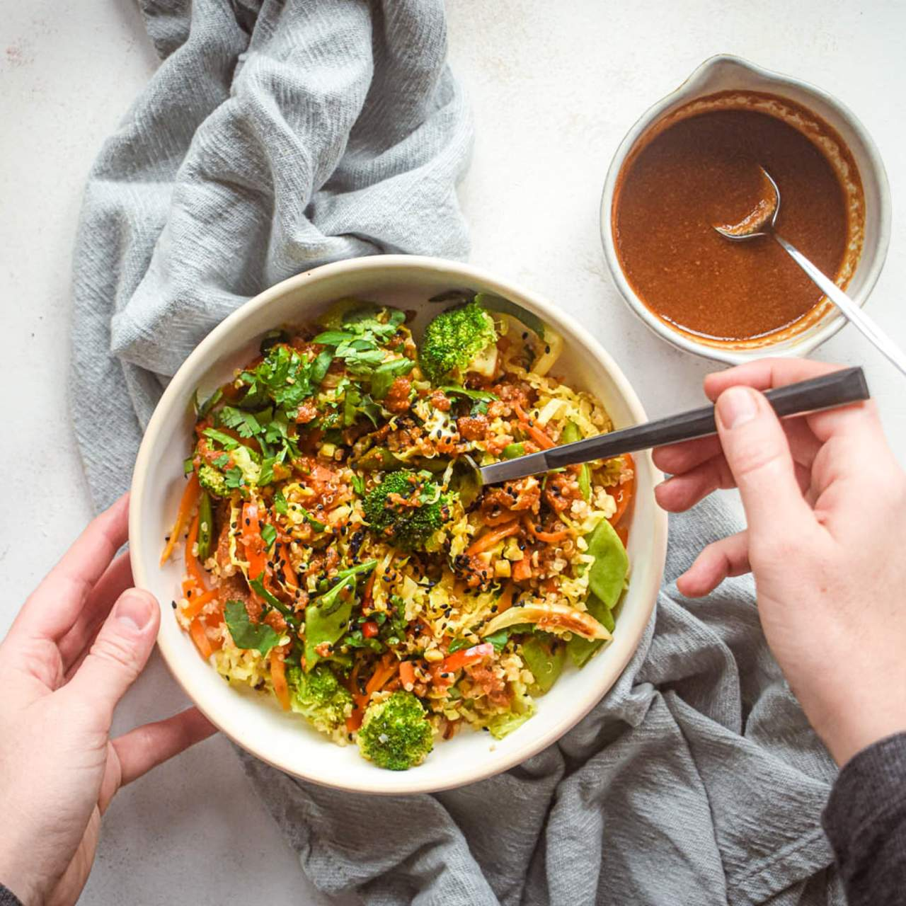

Quinoa and Vegetable Stir Fry
Click me to change my theme ... This recipe is high in fiber, protein, and healthy fats from quinoa and vegetables, making it a great vegetarian option for meal prep. You can also add more vegetables or swap out any of the vegetables in this recipe based on your preferences.
Ingredients:- 1 cup quinoa, rinsed and drained
- 2 cups water
- 2 tablespoons olive oil
- 1 onion, diced
- 2 cloves garlic, minced
- 2 carrots, peeled and sliced
- 1 red bell pepper, sliced
- 1 yellow bell pepper, sliced
- 1 small head of broccoli, cut into small florets
- 2 tablespoons soy sauce
- 1 tablespoon honey
- 1/2 teaspoon ground ginger
- 1/4 teaspoon red pepper flakes
- Salt and black pepper to taste
- Instructions:
- In a medium saucepan, bring the quinoa and water to a boil. Reduce the heat to low, cover, and simmer for 15-20 minutes, or until the quinoa is cooked and the water is absorbed. Remove from heat and let it sit for 5 minutes. Fluff with a fork and set aside.
- In a large skillet, heat the olive oil over medium-high heat. Add the onion and garlic and sauté for 2-3 minutes, or until the onion is translucent.
- Add the sliced carrots and sauté for another 2-3 minutes, or until the carrots are slightly tender.
- Add the sliced bell peppers and broccoli florets and stir fry for 4-5 minutes, or until the vegetables are tender-crisp.
- In a small bowl, whisk together the soy sauce, honey, ground ginger, and red pepper flakes.
- Add the cooked quinoa to the skillet and pour the sauce over the vegetables and quinoa. Stir to combine and cook for an additional 2-3 minutes to allow the flavors to meld.
- Season with salt and black pepper to taste.
- Divide the stir-fry into individual meal prep containers. Allow it to cool, then store in the refrigerator for up to 4 days.